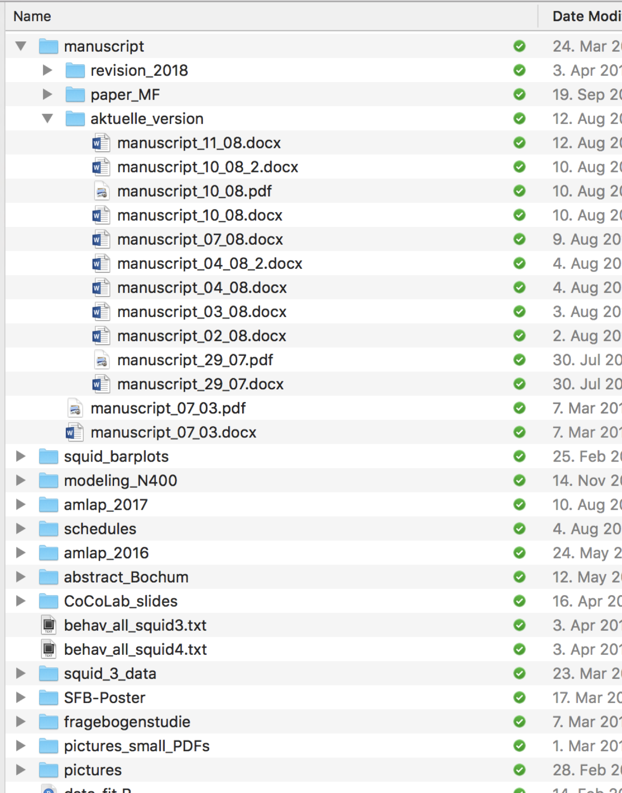
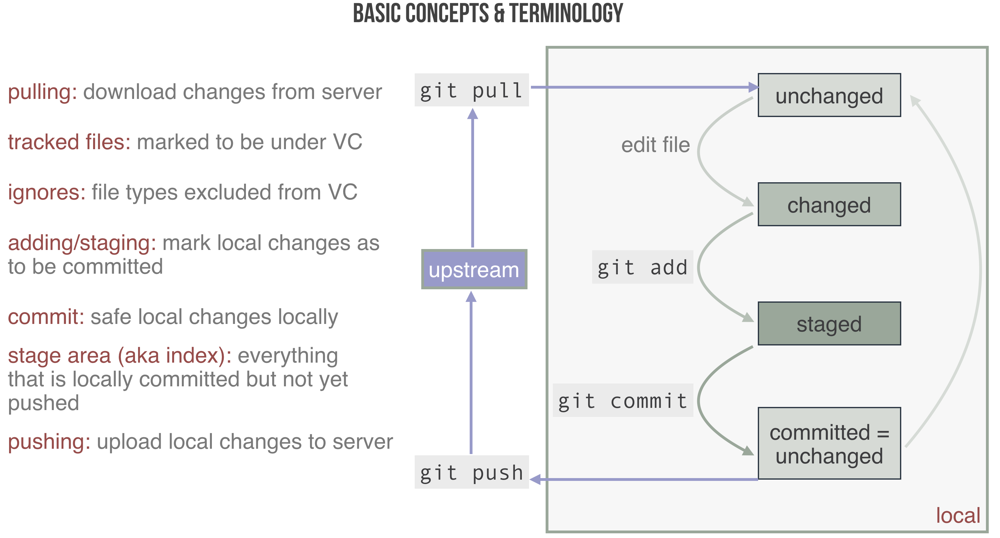

Chapter 4 Version control with git
Experimental work is usually done in a team. When you work with others (and this usually includes past and future versions of yourself) it is good practice to be tidy. You want to be able to access the latest version of your work immediately. You want to be able to work in parallel, without corrupting your teammates’ work. When conflicts arise, you want to solve them easily.
What you should not do, at least if you want to work with me, is send files per email, or have a shared Dropbox folder that looks like this (“aktuelle_version” means “current version”):

A much better solution for tidy cooperationi is to use a version control system. A currently very popular instance of VC is git. There are many great introductions to git, textbased and videos. Have your pick! There are GUIs and Apps for your smartphone. That’s impressive, but I recommend using the command line, or built-in functions in your favorite text editor.
The most important thing you need to know about git for this course, is that git keeps a remote copy and as many local copies as you want of the complete history of your project, called repository. When you make changes locally during your work, you first tell your local repository that these changes are to stay for good: you “commit to them”. When you start working you first “synchronize” your local copy of the repository with the remote, by “pulling” the latest changes to your own machine.
For this course, we will really only need the basic commands:
git clone:: to “download” a local copy of an online repository, if you do not already have onegit pull:: to “update” your local copy, e.g., after others have made changesgit add:: to stage changes or files for the next commitgit commit:: to, well, commit yourself to the currently staged changesgit push:: to to “upload” your changes, so others can pull them
The basic workflow and its main concepts are summarized here:

4.1 Working with a local repository
4.1.1 Creating a repository
- open a command line tool
- create a folder of your choice
- e.g.,
mkdir my_first_git
- e.g.,
4.1.2 Adding a file
- go to this directory and initialize
- e.g.,
cd my_first_git && git init
- e.g.,
- add a file called
mynotes.mdto the directory - open the file with a text editor
- type some markdown & save the file
- make sure to write several lines
- inspect the status with
git status - add the file to version control with
git add mynotes.md - inspect the status with
git statusagain - now commit your changes with
git commit -m "my first commit" - inspect the status with
git statusagain - look at the log history of your repo with
git log
4.1.3 Add another file
- create another file called
mynotes_2.md - fill in some content of your choice
- add it to version control using the same procedure as before
4.1.4 Seeing current changes
- make some edits to
mynotes.md- add text in some lines
- delete some text in existing lines
- inspect the status with
git status- this tells you which files changed, but not how exactly
- type
git diff mynotes.mdto see changes between last commit & current version - commit these changes
- type
git diff mynotes.mdagain
4.1.5 Seeing changes between commits
- you can see what changed in all files from COMMIT-1 to COMMIT-2 by typing
git diff mynotes.md COMMIT-1 COMMIT-2- here COMMIT-x is the commit ID (which you find in the output of
git log)
- here COMMIT-x is the commit ID (which you find in the output of
- zoom in on changes in file
mynotes.mdwithgit diff mynotes.md COMMIT-1 COMMIT-2 -- mynotes.md - type
git log -p mynotes.mdto get a full change history of filemynotes.md
4.1.6 Undoing staging
- make changes to your file
mynotes.md - stage the changes with
git add mynotes.md - look at
git status(boring!) - to unstage these changes type
git reset mynotes.md - look at
git statusagain - check whether your changes got lost (using what you learned above)
4.1.7 Undoing local changes
4.1.7.1 Single files
- type
git checkout mynotes.mdto undo your recent local changes - check the status and the diff between local file and last commit
4.1.7.2 Whole repo
- change both of your files & inspect the status
- type
git reset --hardto undo all local changes - inspect status to verify
4.1.8 Going back in time
- retrieve the (shortened) commit ID of your first commit by
git log --oneline - type
git checkout FIRST-COMMIT-IDto roll back complete to where you were in the beginning
4.1.9 Branching
- so far our history of developments was linear; it’s time to change that
- create a new branch with
git branch silly_try - switch to that new branch with
git checkout silly_try - add one or more lines with text at the beginning (!) of
mynotes.md- don’t change anything else in the file!
- add & commit the changes with
git commit -a -m "changes to a branch" - look at your history now with
git log --graph --oneline --all- we now live in a branching-time universe
- different developments of your project live next to each other
4.1.10 Merging
- we will now parallel universes together
- switch back to the master branch with
git checkout master - merge the changes into the master branch with
git merge silly_try- if we are lucky git will merge automatically
- if not, there will be so-called merge conflicts
- if you have merge conflicts, you will need to resolve them manually
- commit your changes with
git commit -a -m "merged in branch silly_try" - have a look at your history with
git log --graph --oneline --all
4.1.11 Resolving merge conflicts
- when a conflict occurs and git cannot merge automatically, it creates a new file in which both changes are kept side by side
- the user must then decide by hand which changes to keep or how to merge
- use will find tools of your taste for doing this by searching the internet
4.2 Working with a remote repository
4.2.1 Creating and linking the remote repository
- create a remote repository, e.g., on GitHub
- link your local repo to the global one with
git remote add origin YOUR-REPO-URL- now
originis the name for your remote repo
- now
4.2.2 Pushing and pulling
- pushing is when you “upload” local changes
- pulling is when you “download” remote changes
- merge conflicts can arise just like when merging branches